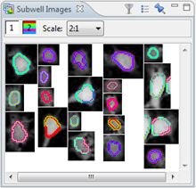

The Subwell Image Set View will show all the images of the individual cells of one or more selected wells, or from a selection in any subwell level chart.
These are the functional buttons:
| Filter the images so that only the selected cells are shown. | |
Open a settings window so you can change:
|
|
| "Pin" or "freeze" view so it will no longer receive selections from other views. |
You can also filter the shown channels by clicking on them. A hidden channel has a red circle with a dash through it over the channel number.
To open the Subwell Image Set View:
- Right-click on Subwell data > Show Subwell Image Set
- Go to Window > Show View > Other > Image > Subwell Image Set

Note: You can use your scroll wheel to easily zoom in or out.
Tip: The subwell image set view can be used to show all selected items in a chart. It is often impossible to show all cells as tooltips, but every item will be shown in the subwell image Set View: